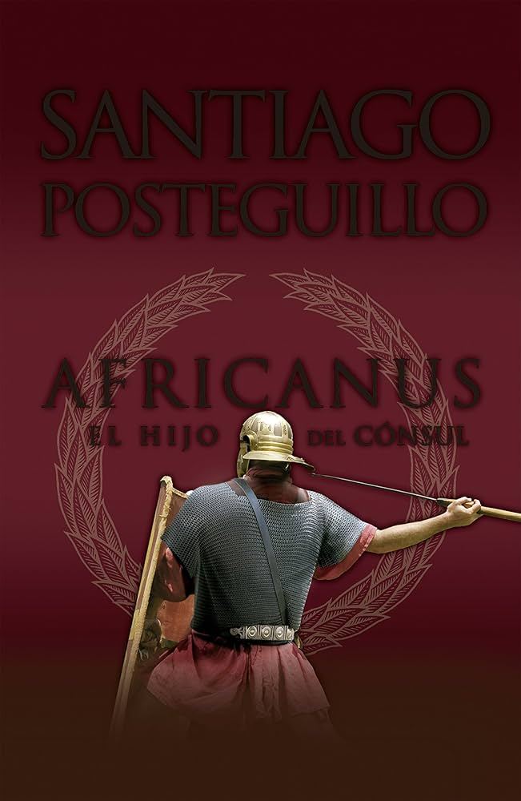
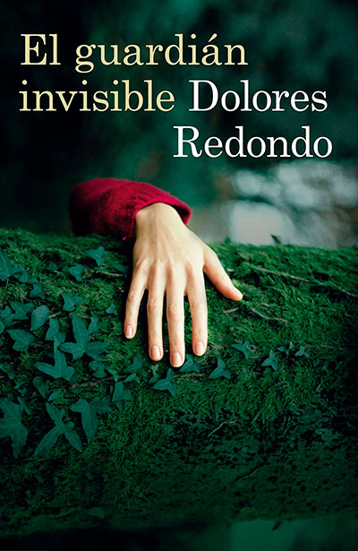
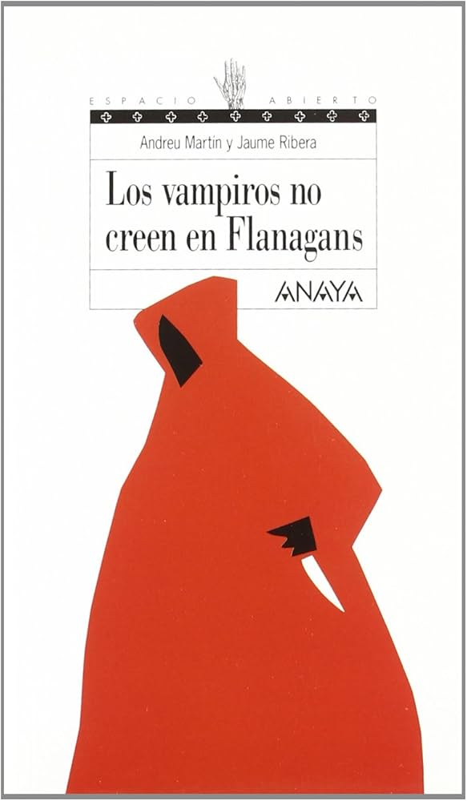

| Sinopsis | Precio | |
|---|---|---|
 |
Primera parte de la trilogía alrededor del personaje de Publio Cornelio Escipión, llamado Africanus, de cuya segunda parte se han vendido más de 25.000 ejemplares.Novela muy bien documentada, en la que aparecen personajes bien conocidos que adquieren una absoluta dimensión humana.A finales del siglo III a. C., Roma se encontraba al borde de la destrucción total, a punto de ser aniquilada por los ejércitos cartagineses al mando de uno de los mejores estrategas militares de todos los tiempos: Aníbal. Su alianza con Filipo V de Macedonia, que pretendía la aniquilación de Roma como Estado y el reparto del mundo conocido entre las potencias de Cartago y Macedonia, constituía una fuerza imparable que, de haber conseguido sus objetivos, habría determinado para siempre el devenir de Occidente. Pero el azar y la fortuna intervinieron para que las cosas fueran de otro modo. Pocos años antes del estallido del más cruento conflicto bélico que se hubiera vivido en Roma, nació un niño que estaba destinado a cambiar el curso de la historia: Publio Cornelio Escipión. Con magistral precisión histórica y un excelente ritmo narrativo, Santiago Posteguillo presenta la historia de la infancia y juventud de Africanus, uno de los personajes más influyentes de Occidente. | 8,85 € |
 |
El guardián invisible de Dolores Redondo es la primera parte de la Trilogía del Baztán. «Ainhoa Elizasu fue la segunda víctima del basajaun, aunque entonces la prensa todavía no lo llamaba así. Fue un poco más tarde cuando trascendió que alrededor de los cadáveres aparecían pelos de animal, restos de piel y rastros dudosamente humanos, unidos a una especie de fúnebre ceremonia de purificación. Una fuerza maligna, telúrica y ancestral parecía haber marcado los cuerpos de aquellas casi niñas con la ropa rasgada, el vello púbico rasurado y las manos dispuestas en actitud virginal.» En los márgenes del río Baztán, en el valle de Navarra, aparece el cuerpo desnudo de una adolescente en unas circunstancias que lo ponen en relación con un asesinato ocurrido en los alrededores un mes atrás. La inspectora de la sección de homicidios dela Policía Foral, Amaia Salazar, será la encargada de dirigir una investigación que la llevará devuelta a Elizondo, una pequeña población de donde es originaria y de la que ha tratado dehuir toda su vida. Enfrentada con las cada vez más complicadas derivaciones del caso y con sus propios fantasmas familiares, la investigación de Amaia es una carrera contrarreloj para dar con un asesino que puede mostrar el rostro más aterrador de una realidad brutal al tiempo que convocar a los seres más inquietantes de las leyendas del Norte. | 17,58 € |
 |
¿Vampiros? Flanagan no cree en vampiros, al menos cuando luce el sol. Pero de noche, solo en un castillo en ruinas, en una comarca famosa por su cosecha de cadáveres desangrados... es otra cosa. Por una estúpida apuesta, sus vacaciones en la nieve se convierten en una sucesión de situaciones peligrosas. Y, por si fuera poco, tiene, además, algunas preocupaciones: el niño pijo se ha empeñado en quitarle a su novia; ha de descubrir al enmascarado de quien se ha enamorado María Gual, y, lo más importante, superar un cursillo acelerado de esquí. | 25,00 € |
| Número 1 de la colección "Súper Humor" de Mortadelo y Filemón. Una revisión de la carrera de Ibáñez que incluye anecdotas, información y páginas de 20 de las series que más han marcado su vida profesional. Es bien sabido que Francisco Ibáñez es el creador de personajes como Mortadelo y Filemón, Rompetechos o el botones Sacarino. Pero en su dilatada carrera de más de 50 años, este autor ha dado vida a muchas otras criaturas de papel. Este libro recuerda las series más importantes de su trayectoria, incidiendo tanto en sus personajes más populares como en otros que han quedado en la memoria colectiva de este país. Esta entrega incluye la historieta de 35 aniversario y material variado de Ibáñez: 35 aniversario: El álbum de este título comienza con la historia de Francisco Ibáñez, desde su infancia hasta que es contratado por los estudios B, pasando por la creación de todos sus personajes. Esta biografía se va mezclando con historias en las que Mortadelo y Filemón van coincidiendo con los demás personajes del autor. Esta historia es, además, una de las favoritas de los fans de Mortadelo y Filemón y de Ibáñez, y se ha convertido ya en un clásico de los cómics del autor. | 190,00 € | |